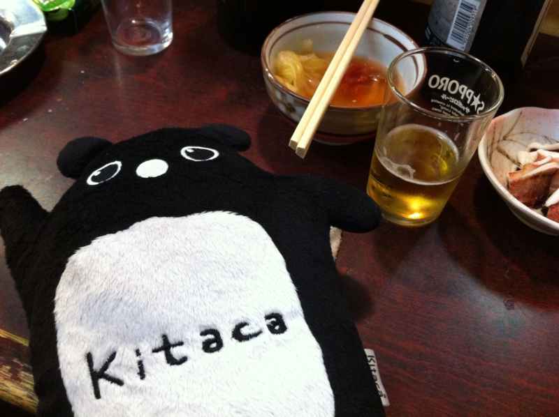
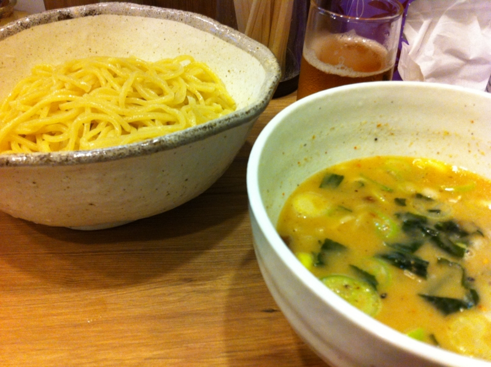
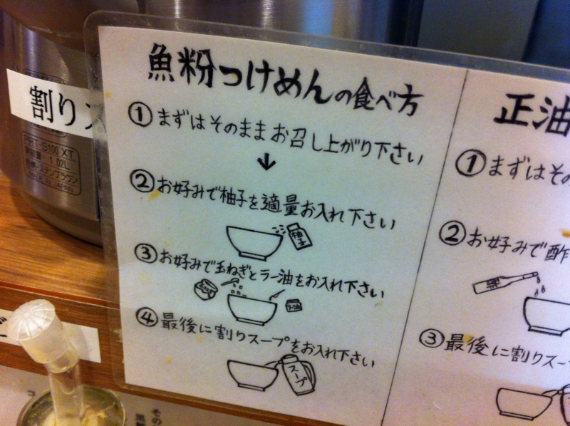

つけ麺で、1周年。
執筆日時：

札幌旅行でお金がないのに、3日連続で小岩へ出勤しているだるやなぎですが、みなさん、いかがお過ごしでしょうか。
それはそうと、今日はつけ麺食べてきたよ。
ちょうど1周年なんだそうだ！ 記念価格で客が多過ぎて、少し引けるまで近所の日高屋でお酒飲んで時間を潰した。まぁ、なんというか、安いから行きたかったわけじゃなくて、ちょっとお祝いをしたかったから行ったのだ。てっきりもう2年以上やってたんだと思ったけど、まだ1年だったんだね。

わしはここの魚粉つけ麺が結構好きだ*1。もともとあんまりラーメンは好きではないんだけど、ここはたまに食べたくなっていく。マスターもいい人だし、体を壊さない程度に頑張ってほしいな。
そもそも、つけ麺というのはわしのような猫舌にはありがたい食べ物だ。熱さを調節できるしね。余ったつけ汁は熱いスープで割って飲むと、体が温まって美味しい。まぁ、夏はちょっとお店の中暑いんだけどね。それはそれでよし。瓶ビールで冷やせばいいんだ。
*1:美味しいかどうかは知らん。わしにはラーメンの味などわからないから